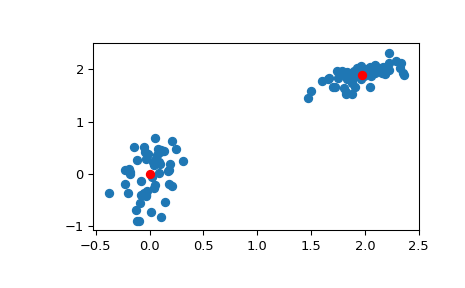

scipy.cluster.vq.kmeans¶
-
scipy.cluster.vq.kmeans(obs, k_or_guess, iter=20, thresh=1e-05, check_finite=True)[source]¶ Performs k-means on a set of observation vectors forming k clusters.
The k-means algorithm adjusts the classification of the observations into clusters and updates the cluster centroids until the position of the centroids is stable over successive iterations. In this implementation of the algorithm, the stability of the centroids is determined by comparing the absolute value of the change in the average Euclidean distance between the observations and their corresponding centroids against a threshold. This yields a code book mapping centroids to codes and vice versa.
- Parameters
- obsndarray
Each row of the M by N array is an observation vector. The columns are the features seen during each observation. The features must be whitened first with the
whitenfunction.- k_or_guessint or ndarray
The number of centroids to generate. A code is assigned to each centroid, which is also the row index of the centroid in the code_book matrix generated.
The initial k centroids are chosen by randomly selecting observations from the observation matrix. Alternatively, passing a k by N array specifies the initial k centroids.
- iterint, optional
The number of times to run k-means, returning the codebook with the lowest distortion. This argument is ignored if initial centroids are specified with an array for the
k_or_guessparameter. This parameter does not represent the number of iterations of the k-means algorithm.- threshfloat, optional
Terminates the k-means algorithm if the change in distortion since the last k-means iteration is less than or equal to threshold.
- check_finitebool, optional
Whether to check that the input matrices contain only finite numbers. Disabling may give a performance gain, but may result in problems (crashes, non-termination) if the inputs do contain infinities or NaNs. Default: True
- Returns
- codebookndarray
A k by N array of k centroids. The ith centroid codebook[i] is represented with the code i. The centroids and codes generated represent the lowest distortion seen, not necessarily the globally minimal distortion.
- distortionfloat
The mean (non-squared) Euclidean distance between the observations passed and the centroids generated. Note the difference to the standard definition of distortion in the context of the k-means algorithm, which is the sum of the squared distances.
See also
Examples
>>> from numpy import array >>> from scipy.cluster.vq import vq, kmeans, whiten >>> import matplotlib.pyplot as plt >>> features = array([[ 1.9,2.3], ... [ 1.5,2.5], ... [ 0.8,0.6], ... [ 0.4,1.8], ... [ 0.1,0.1], ... [ 0.2,1.8], ... [ 2.0,0.5], ... [ 0.3,1.5], ... [ 1.0,1.0]]) >>> whitened = whiten(features) >>> book = np.array((whitened[0],whitened[2])) >>> kmeans(whitened,book) (array([[ 2.3110306 , 2.86287398], # random [ 0.93218041, 1.24398691]]), 0.85684700941625547)
>>> from numpy import random >>> random.seed((1000,2000)) >>> codes = 3 >>> kmeans(whitened,codes) (array([[ 2.3110306 , 2.86287398], # random [ 1.32544402, 0.65607529], [ 0.40782893, 2.02786907]]), 0.5196582527686241)
>>> # Create 50 datapoints in two clusters a and b >>> pts = 50 >>> a = np.random.multivariate_normal([0, 0], [[4, 1], [1, 4]], size=pts) >>> b = np.random.multivariate_normal([30, 10], ... [[10, 2], [2, 1]], ... size=pts) >>> features = np.concatenate((a, b)) >>> # Whiten data >>> whitened = whiten(features) >>> # Find 2 clusters in the data >>> codebook, distortion = kmeans(whitened, 2) >>> # Plot whitened data and cluster centers in red >>> plt.scatter(whitened[:, 0], whitened[:, 1]) >>> plt.scatter(codebook[:, 0], codebook[:, 1], c='r') >>> plt.show()
